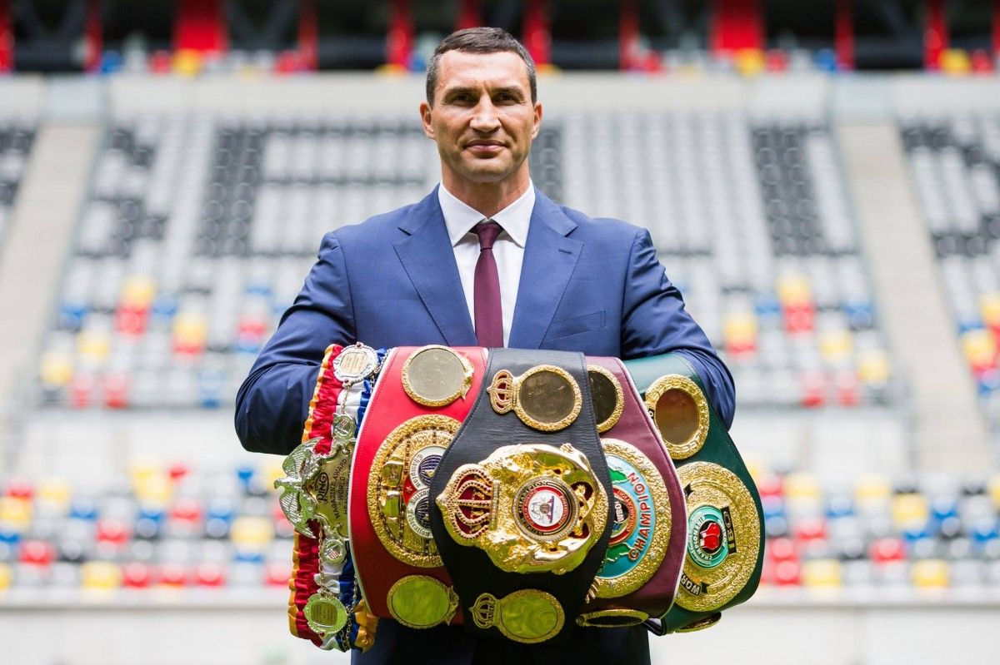
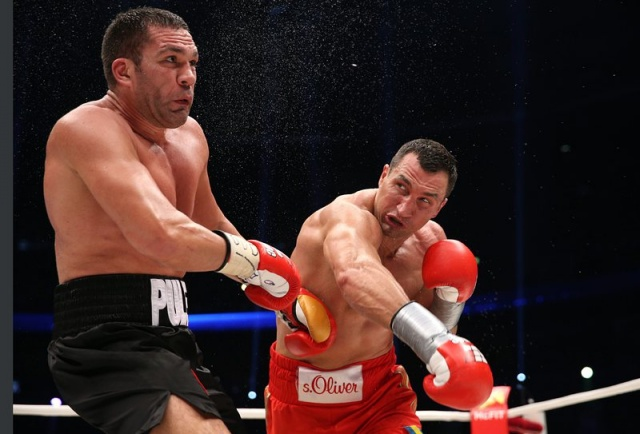
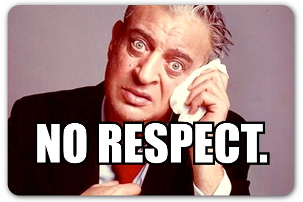

Why Wladimir Klitchko deserves more respect
(or why American boxing fans are lame)
The curious case of Mr.Klitchko
You would think being a world class fighter would get you respect. Dominating while being an overall nice guy is rare.
How could so many disrespect a guy who:
- Had a professional record of 64-5 with 53 Knockouts
- Fought every number one ranked contender during a decade of dominance
- Publicly stood against political corruption in his homeland of Ukraine
- Was respectful to his opponents and presented himself as a professional at all times. (except when his family was disrespected by David Haye, but Haye is a jerk and deserves it)
- Could defeat Ivan Drago and Rocky back to back (if they were real, duh) all while saving a kitten and helping his daughter with her ABC's

Despite all these facts (opinions also === fact. My world, my rules) his historic reign as Heavyweight King carried heavy criticism.
Common criticisms he faced while active are as follows:
- Got knocked out in 4 of his 5 losses (some of which were brutally avenged)
- Should have finished some fighters quicker
- Held on too much when in close quarters
- Generally looked at as the weaker of the two Klitchko brothers
- Boring to watch
SERIOUSLY?!
Why is it wrong and stupid?
Well, I really could hit you with a "Because Stone-Cold (me in this case) said so" but I won't be that bitter. I mean, that's a lie, but let's get into it anyways.
While it is true that he had a questionable chin, the man was still a powerhouse that went undefeated for over 10 years in his major reign. Obviously he knew what worked.
A large one was that he should've ended fights quicker than he did and this often came with the "boring to watch" criticism as well. Looking at it objectively you could say he took his time having learned his lesson in his losses. He learned to not get comfortabe until the bell rings. To me that shows maturity in the ring.
Holding on in close quarters is very common in Heavyweight fights. Why was it such a sticking point against Wladimir from his critics?
His brother, Vitali.
Wladimir was always a technical fighter and had accomplished more than his brother as an amateur and professional, however his older brother Vitali stole the crowds with a much more aggressive brawler fighting style.
I can understand that argument, HOWEVER, these are the same people who cheer Floyd Mayweather Jr, who is by far one of the most overrated fighters in history who actively avoids fighting opponents in their prime and runs in the ring when pressed.
Given that Wladimir had ducked no one in his entire reign and the fact that i'm taking way too long typing this out, just trust me and don't bring that to the table when discussing the King.
To sum up
Wladimir Klitchko is one of the greatest fighters to ever live and holds several records that likely will not be touched or broken in my lifetime.
I hope you at least partially read my rant and are inspired to look into his amazing career more from here. Like Elvis would say "Thank you very much." Oh, and don't disrespect the King.